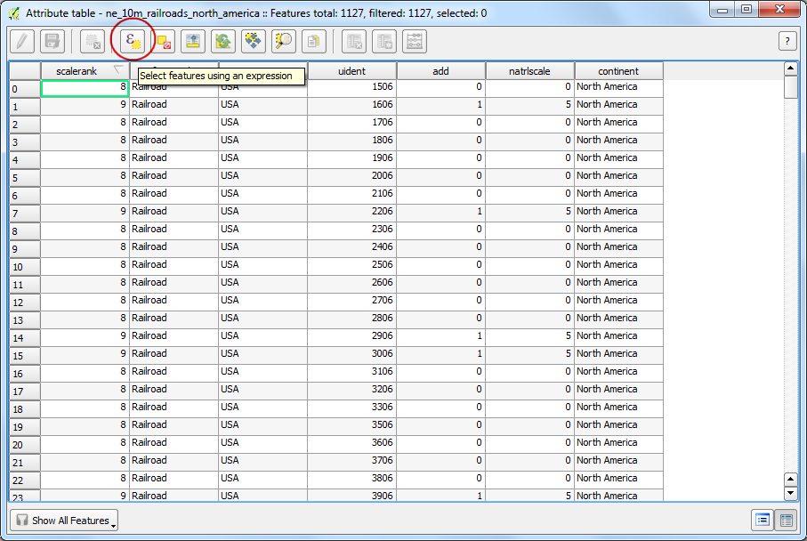
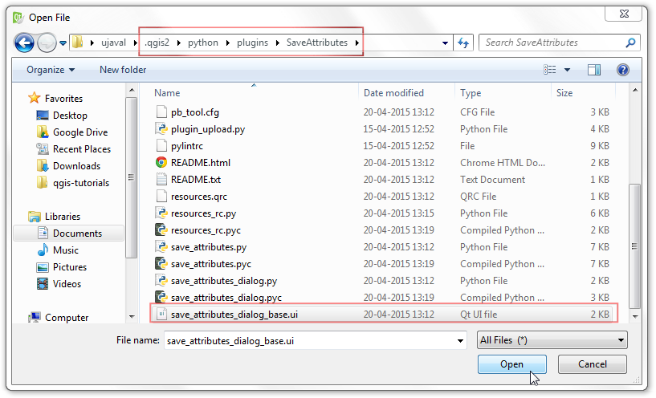
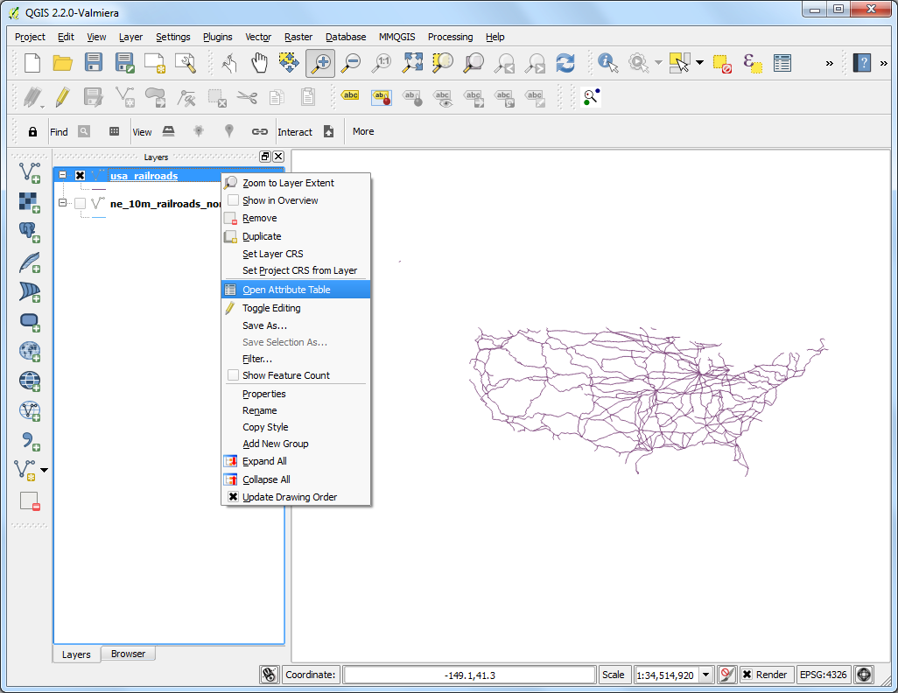
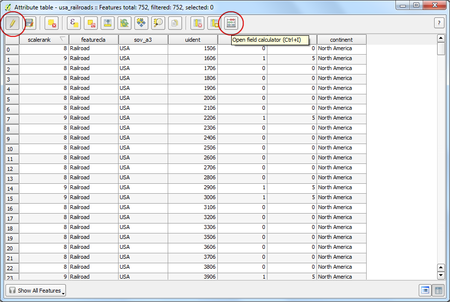

Massa verwerken met behulp van Framework Processing
[ Download PDF A4 Letter ]
QGIS 2.0 introduceerde een nieuw concept genaamd Processing Framework. eerder bekend als Sextante, het Processing Framework verschaft een omgeving binnen QGIS om eigen en algoritmen van derde partijen uit te voeren voor het verwerken van gegevens. Het bevat een nette interface voor de verwerking van massa-gegevens die het mogelijk maakt on eenvoudig een algoritme uit te voeren op verschillende lagen. Massa verwerken is een handig programma dat veel handwerk kan besparen en u helpen uw herhalende taken te automatiseren.
Overzicht van de taak
We zullen een aantal globale vectorlagen nemen en die verkleinen tot het bereik van Afrika in één enkele massaopdracht.
Andere vaardigheden die u zult leren
De gegevens ophalen
Natural Earth heeft verschillende globale vectorlagen. Download de volgende lagen
Eenmaal gedownload, unzip en pak alle shapefiles uit in één enkele map.
Gegevensbron: [NATURALEARTH]
Procedure
Ga naar .

Blader naar het gedownloade shapefile Admin 0 Countries ne_10m_admin_0_countries.shp en klik op Open.

Omdat onze taak is om de globale lagen te verkleinen tot de grenzen van Afrika, moeten we eerste en laag voorbereiden die een polygoon bevat voor het gehele continent. De laag countries heeft een attribuut genamd CONTINENT. We kunnen een concept voor geoverwerking gebruiken dat Dissolve heet om alle landen die dezelfde waarde voor het continent hebben samen te voegen en dat samen te voegen tot één enkele polygoon.

Open het gereedschap Dissolve via .

Selecteer ne_10m_admin_0_countries als de Invoer vectorlaag. Het Veld voor “Dissolve”-aktie zou CONTINENT moeten zijn. Noem het uitvoerbestand continents.shp en selecteer het vak naast Resultaat aan kaartvenster toevoegen.
Notitie
Als u ALLE polygonen wilt samenvoegen, ongeacht hun attributes, kunt u – Dissolve All – selecteren als het Veld voor de “Dissolve”-aktie. Dit zal alle polygonen in de laag samenvoegen en u één enkele samengevoegde polygoon geven.

Het proces van samenvoegen kan enige tijd vergen. Als het proces eenmaal is voltooid, zult u de nieuwe laag continents zien toegevoegd aan QGIS. Gebruik het gereedschap Eén object selecteren uit de werkbalk en klik op Afrika om de polygoon te selecteren die het continent weergeeft.

Klik met rechts op de laag continents en selecteer Selectie opslaan als....

Noem het uitvoerbestand africa.shp. Omdat we alleen zijn geïnteresseerd in de vorm van het continent en niet in de attributen, kunt u het vak Geen attributen aanmaken. Zorg er voor dat het vak Voeg opgeslagen bestand toe aan kaart is geselecteerd en klik op OK.

Nu zal de laag africa zijn geladen in QGIS die één enkele polygoon bevat voor het gehele continent. Nu is het tijd om ons massa verkleiningsproces te starten. Open .

Blader door alle beschikbare algoritmen en zoek naar het gereedschap Clip via . U kunt ook het vak Zoek... gebruiken om eenvoudig het algoritme te vinden.

Klik met rechts op het algoritme Clip en selecteer Uitvoeren als batch-proces.

In het dialoogvenster Batch Processing, is de eerste tab Parameters waar we onze invoer definiëren. Klik op ... naast de eerste rij in de kolom Input layer.

Blader naar de map die de globale lagen voor transport bevat die u heeft gedownload. Houd de toets Ctrl ingedrukt en selecteer alle lagen die u wilt verkleinen. U kunt ook Shift of Ctrl-A gebruiken om een meervoudige selectie te maken. Klik op Openen.

U zult zien dat de kolommen :Input layer automatisch zijn ingevuld met alle lagen die u had geselecteerd. U kunt de knop Add row gebruiken om meer rijen toe te voegen en meer invoer te definiëren. Vervolgens moeten we de laag selecteren die de grenzen bevat waarnaar we onze invoerlagen willen verkleinen. Klik op de knop ... voor de eerste rij en voeg de laag africa.shp toe aan Clip layer. Omdat de verkleiningslaag voor alle invoer hetzelfde is, kunt u dubbelklikken op de kolomkop Clip layer en dezelfde laag zal automatisch worden ingevuld voor alle rijen. Hierna moeten we onze uitvoerbestanden definiëren. Klikop de knop ... naast de eerste rij in de kolom Clipped.

Blader naar de map waar u uw uitvoerlagen wilt opslaan. Typ de bestandsnaam in als clipped_ en klik op Opslaan.

U zult een nieuw dialoogvenster Instelling automatisch vullen zien verschijnen. Selecteer Vullen met parameterwaarden als the Modus Automatisch vullen. Selecteer Input layer als Parameter om te gebruiken. Deze instelling zal de naam van het invoerbestand toevoegen aan het uitvoerbestand samen met het gespecificeerde output_. Dit is belangrijk om er voor te zorgen dat alle uitvoerbestanden unieke namen hebben en zij elkaar niet overschrijven.

Nu kunnen we het proces van massa-verwerking starten. Klik op Run.

Het algoritme voor de verkleining zal worden uitgevoerd vor elk van de invoerbestanden en de uitvoerbestanden maken die we hebben gespecificeerd. Als het batch-proces is voltooid zult u zien dat de lagen zijn toegevoegd aan het kaartvenster van QGIS. Zoals u zult zien zijn alle globale lagen netjes verkleind tot de grens van het continent dat we hadden gespecificeerd.